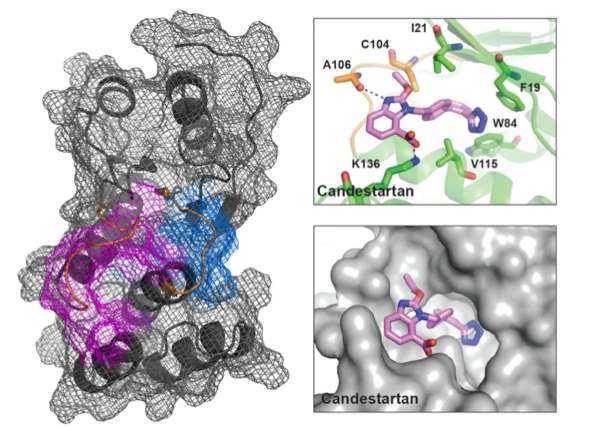
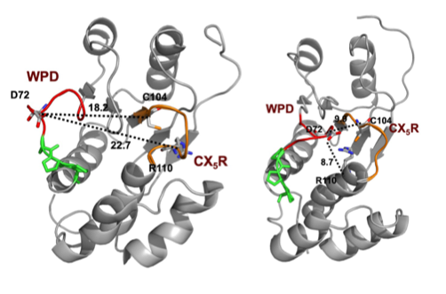
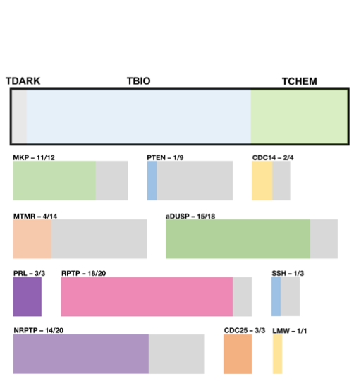
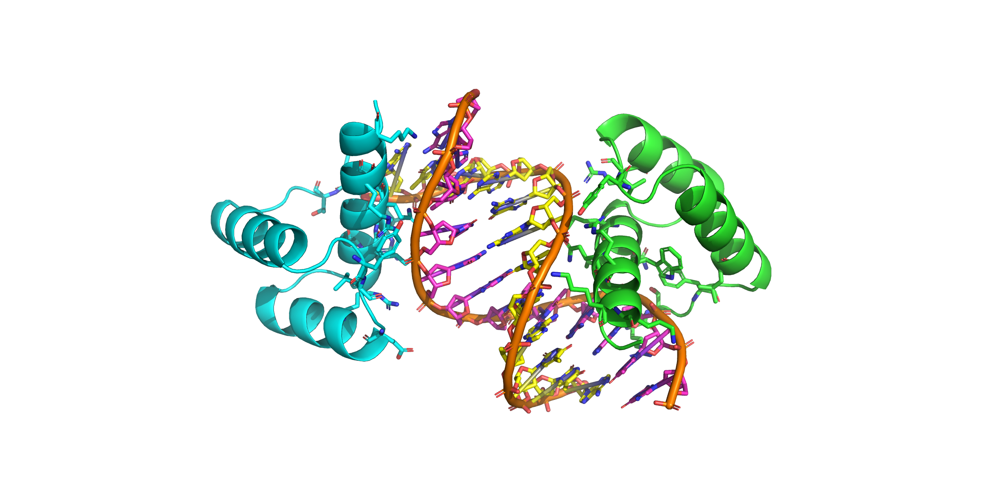
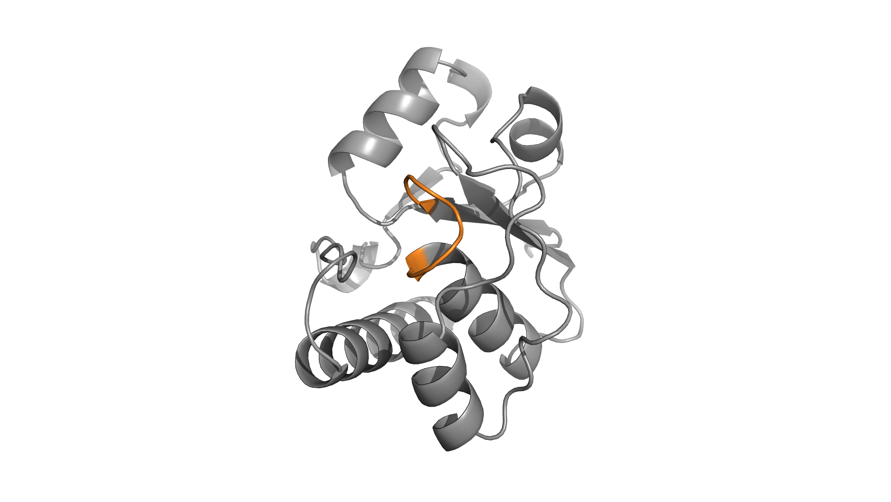
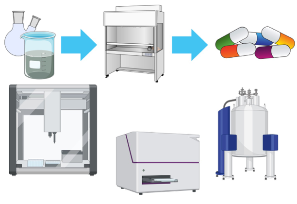
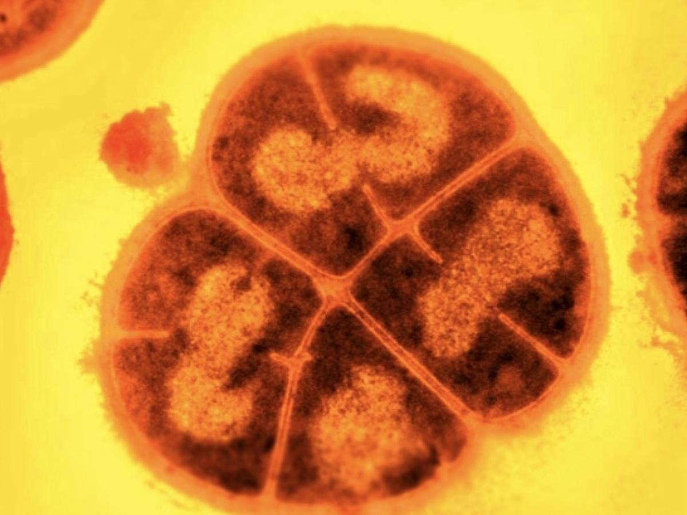
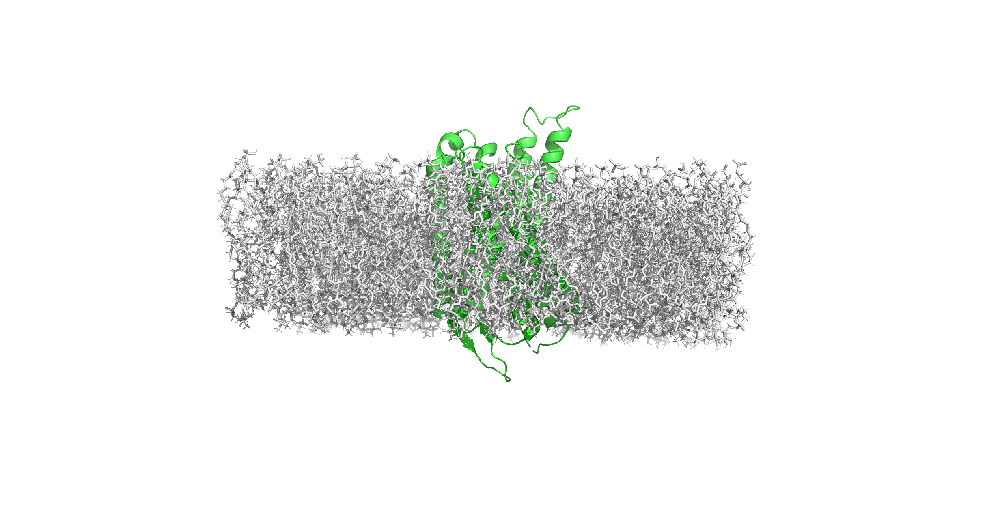

Research in the dC Lab
Our lab mottos, Curiosity leads to cures and The laboratory is our playground reflect our commitment to following our curiosities, not allowing ourselves to be restricted to specific research questions or techniques, but instead continuing to grow to broaden our horizons.
We refer to our group as the Laboratory of Structural Biology and Drug Discovery to reflect our broad interests in the understanding protein structure, function, and dynamics and our mission to develop therapies for various diseases with proteins as primary targets. Beyond this, we are always excited to collaborate with other groups with complementary expertise, where we can leverage our expertise in protein biochemistry and bioNMR.
If any of our projects sound interesting to you, or maybe you need help with anything involving proteins - such as recombinant protein expression or assay development - do not hesitate to reach out. We are always eager to work with similarly passionate folks!

PRL3 Drug Discovery
Our drug discovery program on PRL3, a pro-oncogenic and pro-metastatic phosphatase, leverages an integrated computational, enzyme inhibition, and in vitro screening approach to develop migrastatics and anti-cancer therapies. Different pipelines have resulted to several inhibitors with binding to PRL3 validated by protein- and ligand-observed nuclear magnetic resonance (NMR) spectroscopy, fluorescence, and isothermal titration calorimetry (ITC). We are also designing and optimizing PROTACs and BioPROTACs.

PRL3 Structure and Dynamics
Structures of protein-complexes provide atomic resolution information for the optimization of small molecules and to establish mechanisms of inhibition. Our group uses NMR spectroscopy to characterize the structure of PRL3 bound to small molecule inhibitors. Furthermore, we are interested in the dynamics, at various timescales, associated with PRL3 dynamics, function, and inhibition and in uncovering allosteric networking within PRL3.

Druggability of Human PTPs
A number of PTPs are emerging drug targets while several remain understudied and undrugged. We are optimizing the expression and purification of various human PTPs to uncover their structures and begin chemical probe screening. At the same time, we are using established computational tools to evaluate the druggability of PTPs which can accelerate virtual chemical screening pipelines.

Molecular Dynamics of Homeodomains
Homeodomains are small highly conserved structures consisting of three-helix bundles. They are found in transcription factors across genomes, regulating development and cell fate. Several homeodomain structures have been determined and have been used to study DNA-protein interactions. Protein engineering approaches have also resulted to several thermostable homeodomains. We are using molecular dynamics simulations and NMR spectroscopy to study the relationship between structure, function, dynamics, and stability of homeodomains as well as protein allostery.

Development of Novel Antibiotics
We extend our interest in human PTPs to bacterial PTPs with a particular focus, currently, on low molecular weight protein tyrosine phosphatases. We use the same drug discovery pipelines we use our human PTP targets and collaborate with microbiologists to evaluate bacterial inhibition of molecules identified. This project is also incorporated in SynZyme, a CURE embedded in our upper-level bioinstrumental course, taught by Dr. dela Cerna and Dr. Landge.

Exploratory Drug Screening Efforts
Our lab works on other non-PTP targets, using virtual screening methods, 19F-NMR screening of fluorinated fragment libraries, and nanobody development. These efforts are largely exploratory and early stage and focus on generating hits from virtual and real libraries the lab has access to, as well as molecules synthesized by collaborators within the department, through a drug discovery network. Projects include development of kinase inhibitors, protein-protein interaction inhibitors, and inhibitors of RNA-protein interactions. Trainees involved in this project also engage in assay development and optimization to support these efforts.

Bacterial Evolution
Lab-directed evolution of microorganisms can be achieved by exposure to different kinds of stressors. These experiments provide insight on evolutionary mechanisms for adaptation and survival, such in involving DNA repair machinery and antibiotic resistance. Growth of bacteria in the presence of other chemical species may also illuminate mechanisms for degradation of these chemical species. This project is a living example of our motto, The laboratory of our playground, with all projects being student-initiated and student-driven.

Membrane Proteins
Membrane proteins, particularly receptors and transporters, are critical components of biological membranes, allowing for communication and material transfer between the interior of cells and their environment. Our lab is interested in GPCRs and membrane protein transporters. Students in Dr. dela Cerna’s Biochemistry 2 Laboratory course participate in several aspects of this project.